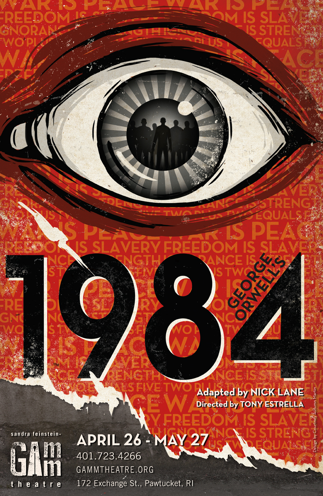

|  |
DescriçãoWinston, herói de 1984, último romance de George Orwell, vive aprisionado na engrenagem totalitária de uma sociedade completamente dominada pelo Estado, onde tudo é feito coletivamente, mas cada qual vive sozinho. Ninguém escapa à vigilância do Grande Irmão, a mais famosa personificação literária de um poder cínico e cruel ao infinito, além de vazio de sentido histórico. De fato, a ideologia do Partido dominante em Oceânia não visa nada de coisa alguma para ninguém, no presente ou no futuro. O’Brien, hierarca do Partido, é quem explica a Winston que 'só nos interessa o poder em si. Nem riqueza, nem luxo, nem vida longa, nem felicidade - só o poder pelo poder, poder puro.' Autor: George OrwellEditora: Companhia das Letras Edição: 7ª Edição Número de Páginas: 315 páginas Ano: 2009 |